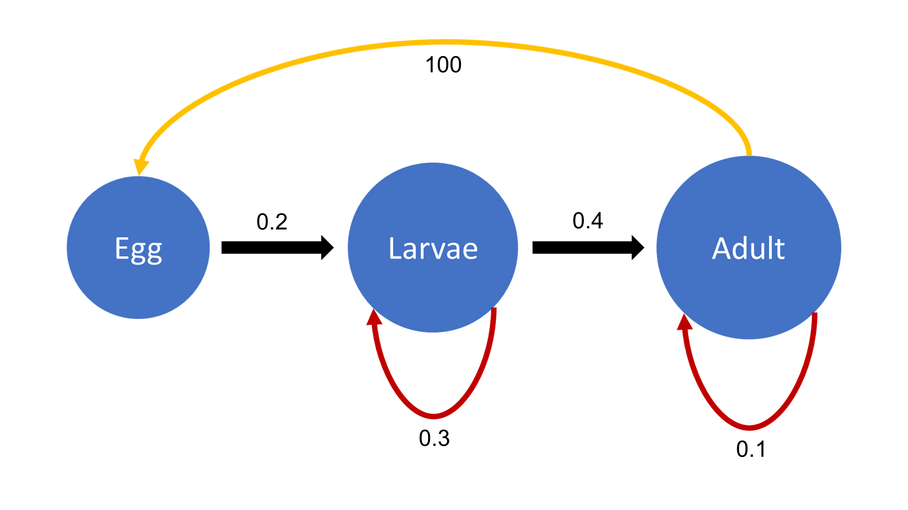

Homework 2
Instructions
Please, using quarto or rmarkdown, answer the questions below. You can use the class notes, the recommended books, and other web materials to help answer the questions. You can work on the homework in groups, but please independently submit pdf document containing answers and code.
In two weeks (11/4/24 by 11:59pm), please submit your pdf file that is rendered/knitted and includes all code, plots, and short answers to CANVAS using the following filename structure LastName_HW2_Filetype_Date (e.g., Santos_HW2_R_20230927). Again, you can share and work together on the code, but independently, submit your answers to the short answer questions in your own words and as markdown text under each question. Here are links to resources about quarto and rmarkdown.
Please reach out if you have any questions about the hw or how to make a pdf using quarto or rmarkdown.
Data for questions
For this section 1 and 2 of this homework, you will use a fish survey dataset from the Moorea Coral Reef (MCR) Long term ecological research (LTER) site. This dataset describes the species abundance and estimated size distributions (total body length to the greatest precision possible) of fishes surveyed as part of MCR LTER’s annual reef fish monitoring program. The metadata for this dataset can be found here.
Section 1 (20 pts)
Upload the MCR LTER annual fish survey data from the course github https://github.com/SeascapeEcologyLab-workshops/BSC6926-B52_Fall2024/blob/main/data/MCR_LTER_Annual_Fish_Survey_20230615.csv into R-Studio. Using R, create a new dataset that includes the top species of each of the 4 coarse trophic guilds (primary consumer, piscivore, planktivore, and secondary consumer) based on the total abundance across the entire dataset. Please use Nt to name the column for abundance data. The metadata could be useful (see above) (3 pts).
Plot total annual abundance at each site with a panel for each species (2 pts).
Short Essay Question: How do the temporal trends of reef fish vary between sites and trophic guilds (5 pts)?
Using R, calculate lambda from one year to the next (i.e., for each time step) for each site and species. Try using either a for-loop or functions (1 pt).
Calculate the mean(λ) and sd(λ) for the each site/species combination using your calculation from Q1.4. Remember to use the geometric mean and its standard deviation (1 pt).
Using ggplot, plot the mean(λ) calculated in question 5 and the sd(λ). Add a horizontal line when population growth = 0. Make a panel for each site to compare lambdas between species (3 pts).
Based on the mean and variance in the finite rate of increase, which population are growing on average, which populations are declining on average, and which have the highest likelihood of collapse/crash? Hint: See Gotelli Chapter 1 equation 1.9 (5 pts).
Section 2 (23 pts)
Using the same species from Section 1, estimate \(K\) from \(\lambda\) and abundance estimates at the island level (i.e., total population) for each species. Hint: Remember the linear relationship between density and per-capita growth rate in the density-dependent model discussed in class and the workshop (3 pts).
Using a discrete density-dependent growth model, project the population growth for each species to 150 years based on the carrying capacity values estimated in Q2 and a starting population size of 500 individuals. Hint: \(1 + r_d = \lambda\); See Gotelli pages 35-37 and pages Stevens 62-68 (3 pts).
Using ggplot, plot the population projections for each species (1 pt).
Short essay question: How do the projections for each species differ? Did the population get as far as the carrying capacity? Why or why not? If not, how many years are required to reach the carrying capacity? When at carrying capacity, do the population fluctuate around K? Why or Why not? (5 pts)
Project the population of each fish species for 150 years using a discrete density-dependent model with environmental stochasticity. Run the projections 50 times for each species (i.e., 50 projections per species) (5 pts).
- Use the 500 as \(N_0\), carrying capacity (\(K\)) values estimated in Q1, and at each time step, use a randomly determined \(r_d\) based on the mean and standard deviation of \(\lambda\) calculated at the island level – Hint: rtruncnorm() function in R and for loops (e.g., Wickham and Grolemund Chapter 17).
Using ggplot, plot a histogram (or density plot) of the population size after 150 year for each species with a vertical line of the carrying capacity (1 pts).
Short essay question: How does the population size at time 150 compare between each species? How do the estimates relate to the carrying capacity? (5 pts).
Section 3 (19 pts)

Convert the loop diagram (life cycle graph) above into a projection matrix (1 pt).
Create a starting population vector based on the life stages of this insect species: egg (N = 100), larvae (N = 0), adult (N = 0). Project the population up to 50 years using the starting population vector and the projection matrix you created (hint: A%*%n(t); See Stevens Chapter 2 pages 34-40) (5 pts).
Plot your results using ggplot, popbio, or base R plotting functions. Plot the projection for each stage class (2 pts).
Short essay question: Looking at the plot from Q3, did the population projection reach a stable stage distribution? Why or why not? What could you tell about the fate of the population after 50 years? (5 pts).
Based on the project matrix above, calculate lambda and calculate the stable stage distribution (1 pt).
Short essay question: What is the proportion between the stages at SSD? What stage is the dominant stage of the population after the stable stage distribution is reached? Why? (5 pts).